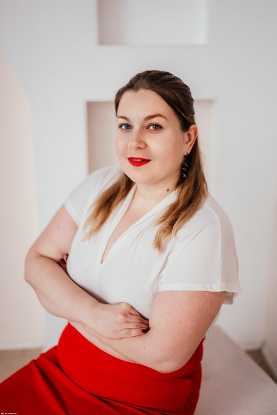
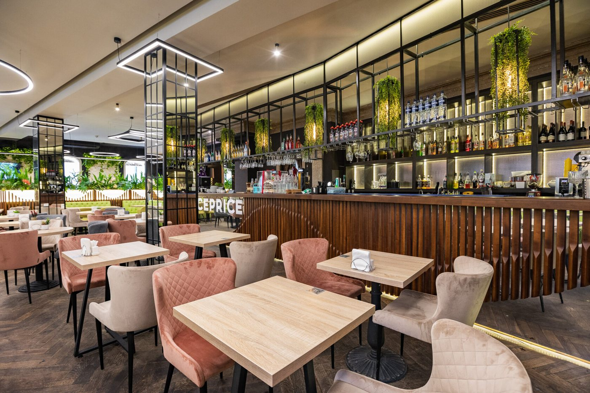

Как это выглядит
Небольшая группа за общим столом, завтрак в красивом московском ресторане, колоды метафорических карт и бумага для творчества.
Ближайшие даты и место проведения уточняйте в Telegram: места ограничены.
Возможность познакомиться со мной как специалистом, решить свой запрос и встретиться с новыми людьми.

Я приглашаю вас на бранч с психологом, где можно через творчество и метафоры соприкоснуться с чем-то внутри себя, ответить на вопрос, который беспокоит.
На каждом бранче вас ждёт знакомство с различными арт-терапевтическими техниками и метафорическими картами.
Темы встреч меняются: от самореализации и любви к себе до поиска внутренней гармонии. Участницы рисуют, работают с картами и делятся инсайтами в тёплой компании.

Небольшая группа за общим столом, завтрак в красивом московском ресторане, колоды метафорических карт и бумага для творчества.
Ближайшие даты и место проведения уточняйте в Telegram: места ограничены.
Раньше я не занималась ничем подобным, и такой формат — это что-то невероятное: не только вкусно поесть в красивом месте, но и понять в себе что-то важное.
Анастасия Щ. · после «Бранча с психологом»Ходила на такой формат впервые, но вышла в восторге! Получилось проработать даже несколько запросов, компания была тёплой, а организатор — внимательным и трепетным.
Ксения С. · после «Бранча с психологом»
Интегративный психолог-консультант, кандидат экономических наук, автор курсов и тренингов. Более 16 лет работаю с людьми.
Напишите мне в Telegram: подскажу ближайшие даты и отвечу на вопросы.
Записаться